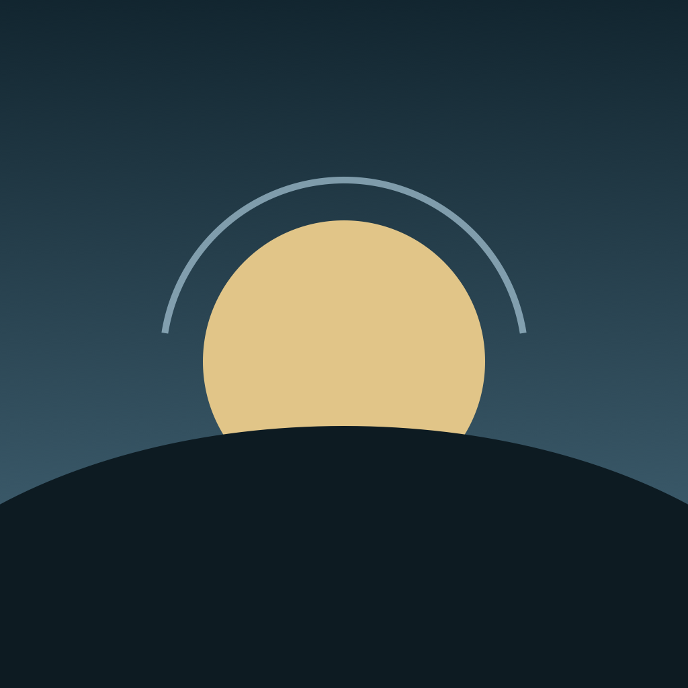

给专注一个计划
立即开始，或按每天、工作日和自选日期重复。让重要的事有自己的时间。

选择让你分心的 App，留出一段完整的时间。
为工作、学习，也为好好休息。
立即开始，或按每天、工作日和自选日期重复。让重要的事有自己的时间。
标准模式可以提前结束；严格模式在本轮结束前限制 Dose 内的修改和停用。
无需独立账号，没有广告或分析 SDK。应用选择由苹果系统处理。
免费领取 7 天试用，从领取成功开始计时，到期不自动扣费。中国区永久解锁价格为 ¥6，一次购买，无订阅；以 App Store 实际显示价格为准。
了解试用与购买